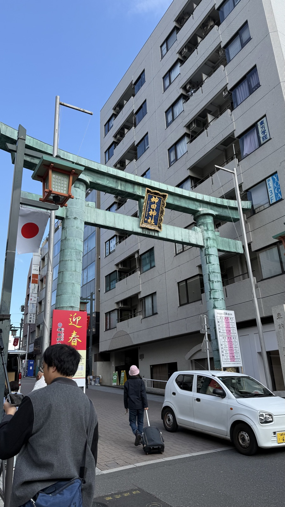
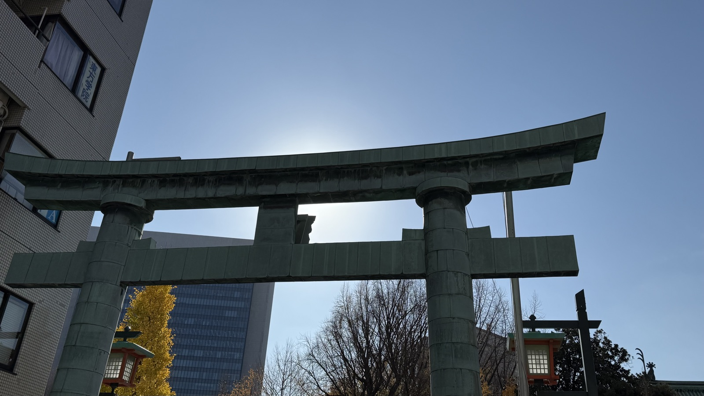
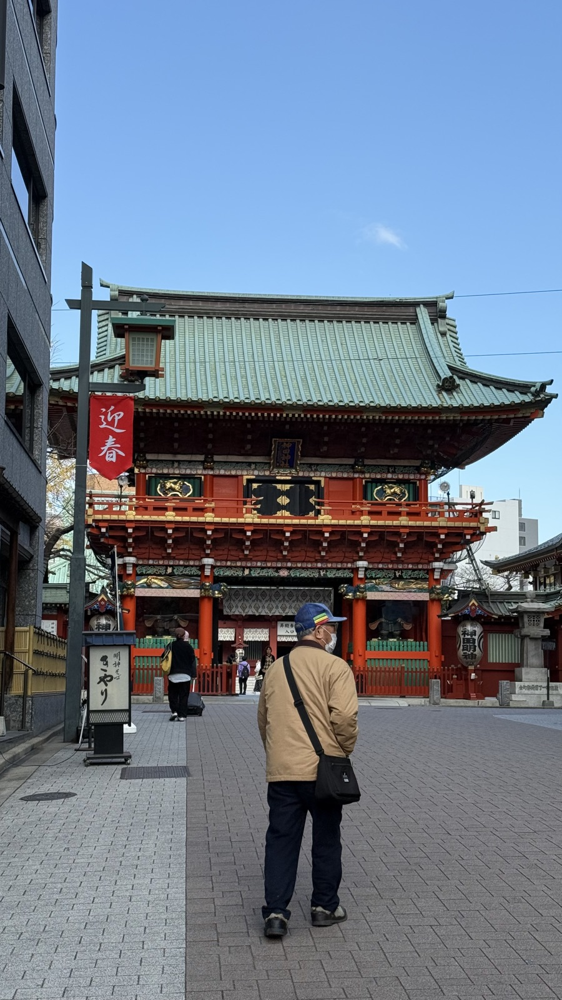
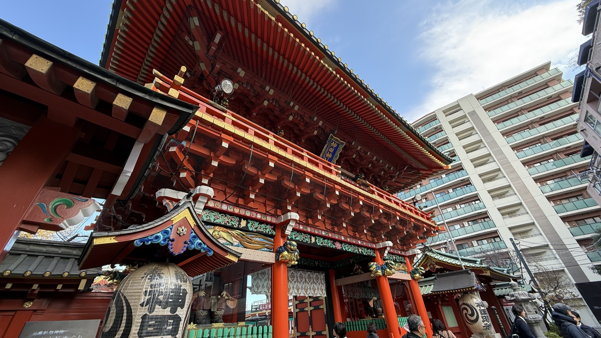
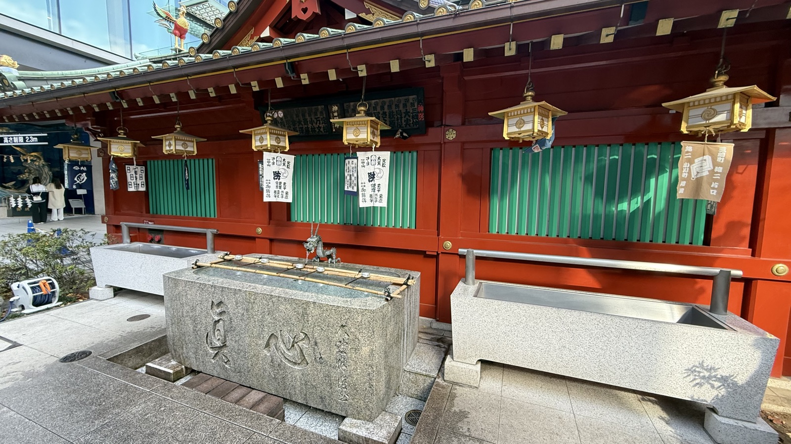
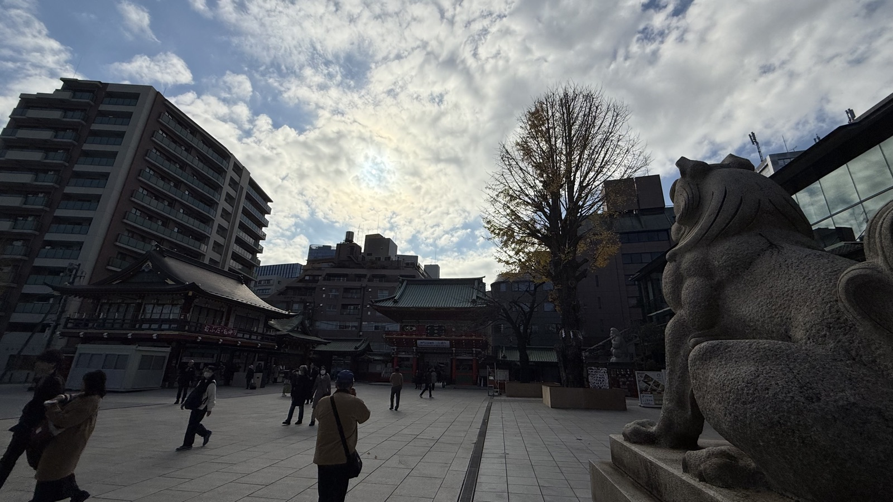
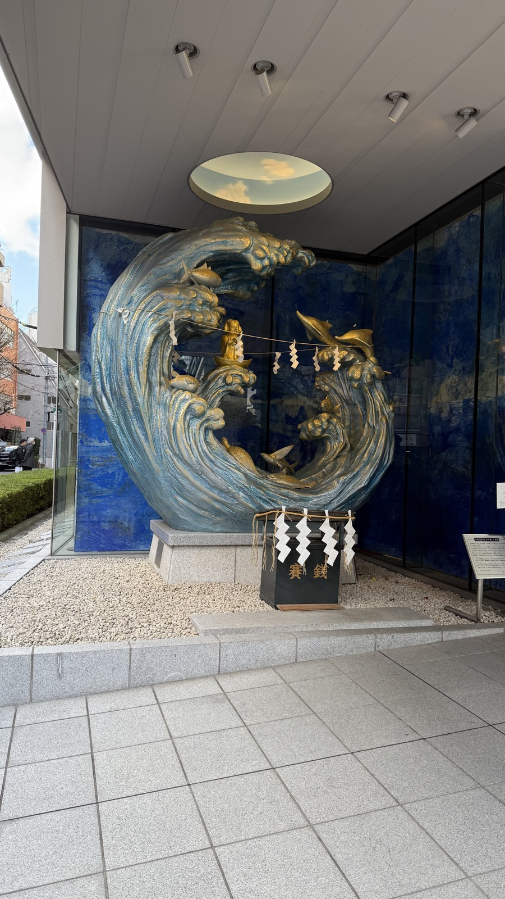
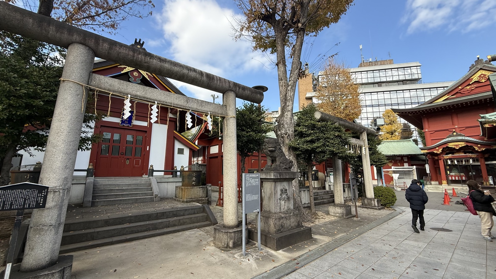
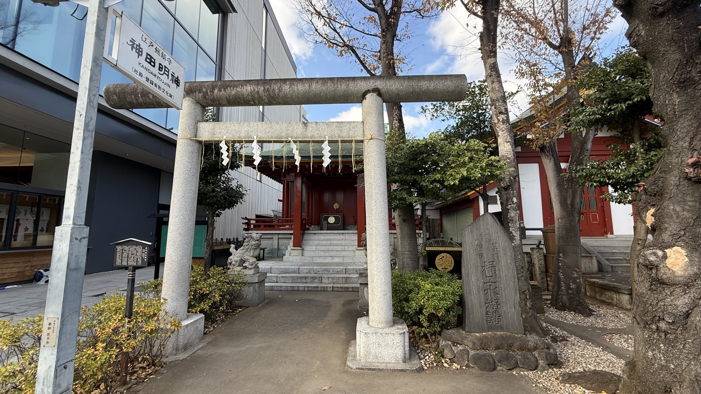
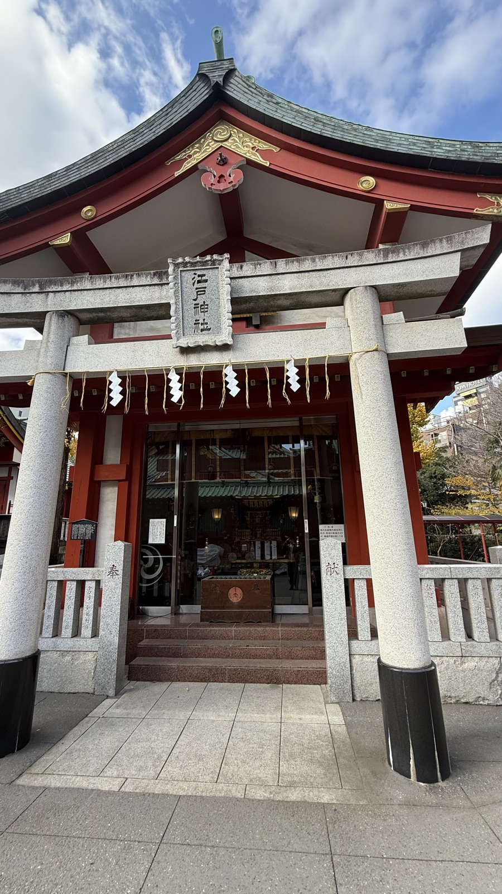

祭神大己貴命・少彦名命・平将門命
ご利益商売繁盛・縁結び・IT情報安全
創建730年と伝わる
最寄駅地下鉄末広町・JR御茶ノ水
History
由緒・創建
730年の創建と伝わる江戸総鎮守。江戸城の表鬼門を守る位置に置かれた。平将門命は14世紀に合祀されたとされる——将門塚の祟りを鎮めるためとされる。明治に一度祭神から外され、1984年に復帰している。



随神門を正面から見た一枚。「迎春」の幟が掲げられている。

Highlights
見どころ
朱塗りの随神門／鉄筋コンクリート造の社殿（1934年、関東大震災の後に建てられたため戦災を免れた）／秋葉原から数分という立地から、今はIT関係の成功祈願でも知られる。




境内社へ続く石鳥居。「神田明神」の社号標が立つ。

境内社・小舟町八雲神社の石鳥居。奥に本殿の屋根がのぞく。

境内社・江戸神社への鳥居。「江戸総鎮守 神田明神」の社号標が並ぶ。

江戸神社の社殿。登録有形文化財に指定されている。
Background
文化的背景
敗者を神として祀る（→記事「神々と分類」）。朝廷に反乱を起こして討たれた将門が、江戸の守り神になった。神田祭は日本三大祭のひとつとされる。